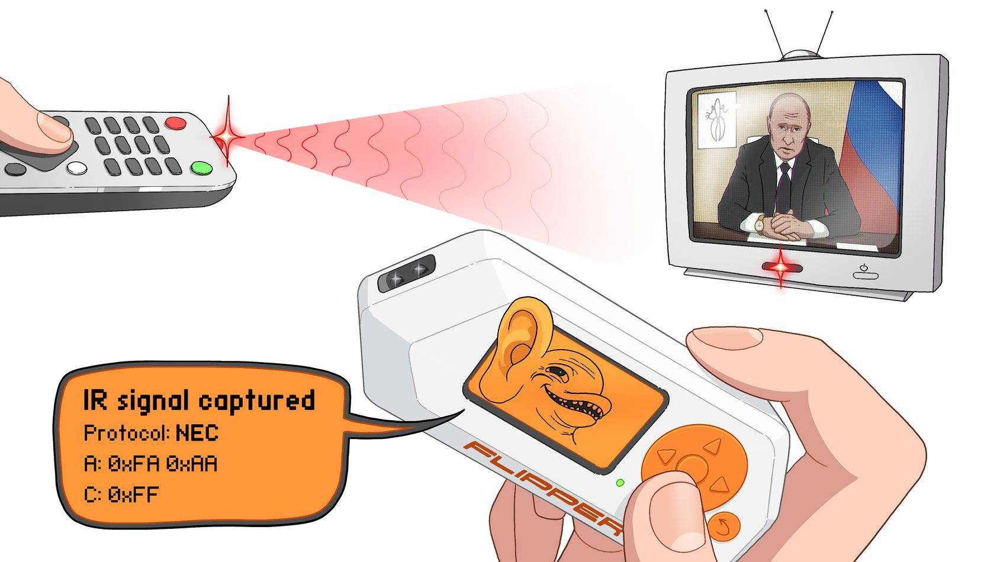
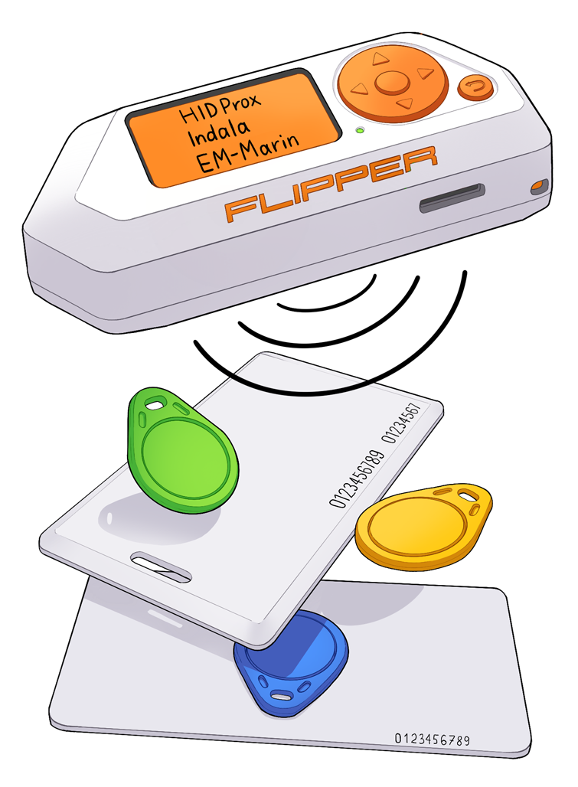
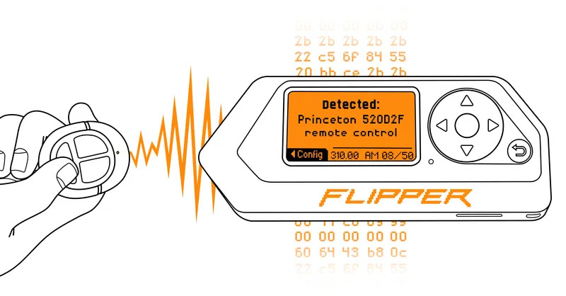
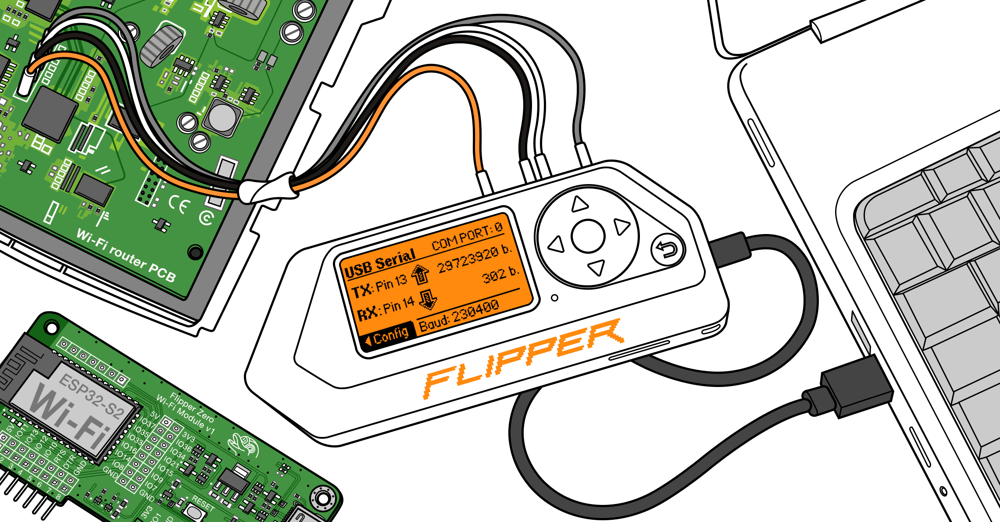

Discover the Potential of
Flipper Zero
Explore the ultimate multi-tool for geeks and hackers.
Discover a world of possibilities with our latest Flipper Zero device.

Universal Remote
The Flipper Zero can emulate infrared signals to control devices like TVs and air conditioners, acting as a universal remote control.

RFID and NFC Reader
The Flipper Zero can read and emulate RFID (Radio Frequency Identification) and NFC (Near Field Communication) cards.

Sub-GHz Transceiver
The Flipper Zero includes capabilities to transmit and receive signals in the Sub-GHz (Sub-Gigahertz) frequency range.

GPIO and USB Tools
The Flipper Zero provides access to GPIO (General-Purpose Input/Output) pins and includes USB tools.